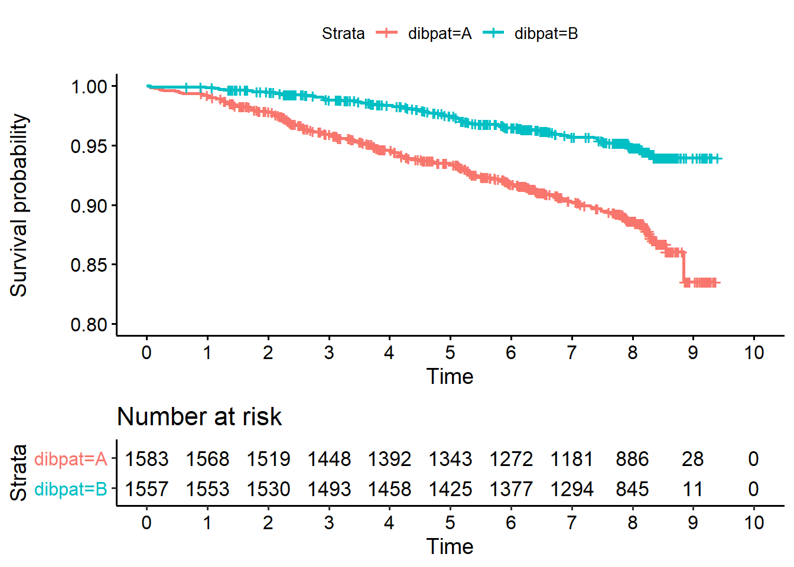
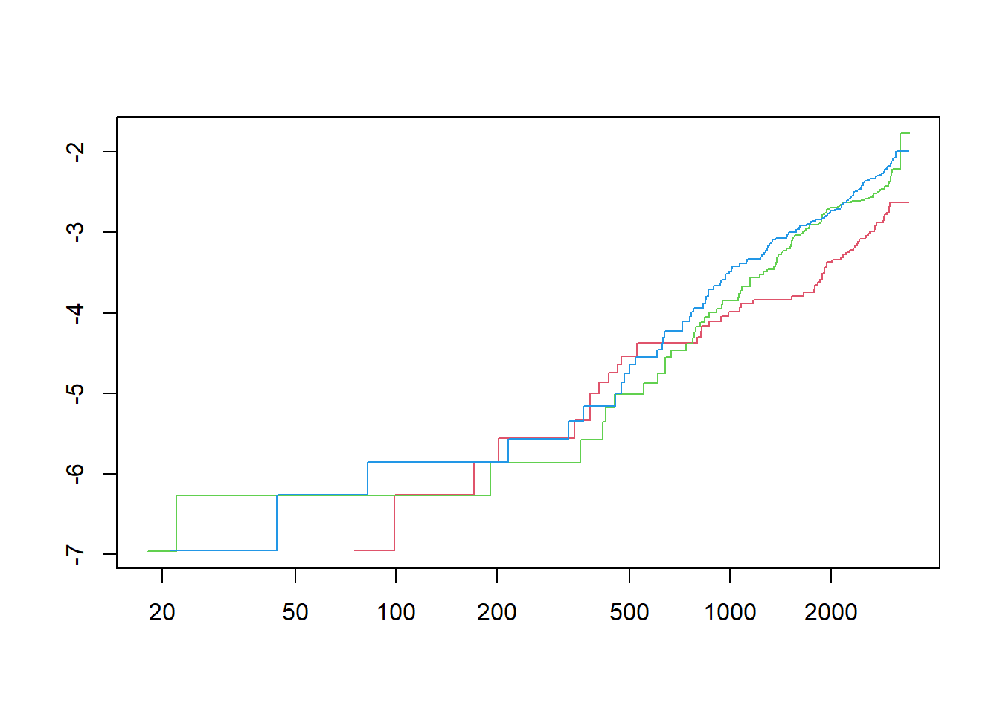

Chapter 3 Hlutfallsleg áhætta
Log-rank prófið segir okkur bara að munur sé á lifun milli hópa en ekki hve mikill hann er. Í log-rank prófinu er hægt að leiðrétta með því að gera stratified próf en það er ekki hægt að leiðrétta fyrir samfelldum breytum. Það er aftur á móti hægt í Cox líkaninu sem er aðhvarfsgreiningarlíkan. Við viljum færa okkur yfir í afhvarfsgreiningu til að meta áhrifsstærðir og til að geta leiðrétt fyrir skýribreytum (e. explanatory variables).
Cox líkanið felur í sér hlutfallslega áhættu á tímabili sem er til skoðunar.
Látum \(h_0(t)\) vera hættufall viðmiðunarhóps og \(h_1(t)\) vera hættufall meðferðarhóps. Ef áhættuhlutfallið er hlutfallslega jafnt gildir
\[ h_1(t) = \exp(\beta)h_0(t). \]
Þá gildir líka með því að heilda báðum megin að \[ H_1(t) = \exp(\beta)H_0(t). \]
Hér er \(H_i(t)\) uppsafnaða hættufallið þ.e. \(H(t) = \int_0^t h_i(u)du\),
Notum svo logra báðum megin. Þá fæst
\[ \log(H_1(t)) = \beta + \log(H_0(t)). \] Með öðrum orðum: ef hlutfallsleg áhætta gildir er mismunur í logranum af uppsafnaða hættufallinu fasti á milli hópa. Fastinn er logrinn af hættuhlutfallinu.
Mynd af \(\log(H_i(t))\) á móti \(t\) gefur þá hugmynd um hvor hlutfallslega áhætta sé gild forsenda. Reyndar er betra að teikna á móti \(\log(t)\) til að teygja á tímaásnum. Það gefur skýrari mynd. Svo má rifja upp að uppsafnaða hættufallið er sama og logrinn af lifunarfallinu með neikvæðu formerki þ.e.
\[ H_i(t) = -\log(S_i(t)). \] Þá má skrifa:
\[ \log(-\log(S_1(t))) = \beta + \log(-\log(S_0(t))). \] Þess vegna er mjög algengt að skoða þessa ákveðnu vörpun af lifunarfallinu þ.e. \(y \to log(-log(y))\). Hún hefur sérstakt nafn í R og kallast cloglog fyrir complementary log-log transformation. Í \(survival\) pakkanum er hægt að meta lifunarföllin með aðferð Kaplan Meier og bera þau svo saman með cloglog vörpum sem er þá samanburður á logranum af uppsafnaða hættufallinu. Fast bil ætti að vera á milli þeirra eins og kom fram að ofan. Þegar þessi vörpun er valin gildir sjálfkrafa að tímaásinn er á logra skala.
Nú skoðum við gögnin okkar henti fyrir Cox-líkan óbreytt eða hvort við þurfum að leiðrétta fyrir því að hlutfallslega áhætta gildir ekki. Skoðum gögnin í dögum.
Teiknum fyrst lifunargröfin:

Teiknum næst áhættuna \(F_i(t)=1-S_i(t)\). Það er gert með valinu fun=“event” til að nota vörpunina \(y \to 1-y\) á lifunarfallið.

Biðjum næst um uppsöfnuðu hættuföllin og notum þá vörpunina \(y \to -log(y)\) á lifunarföllin því \(H_i(t) = -\log(S_i(t))\). Þetta er svo algengt að sú vörpun fær nafnið cumhaz í lifunar pakkanum.

Takið eftir að hér er ekki mikill munur á \(1-S_i(t)\) og \(-log(S_i(t))\) vegna þess að
\[ -log(S_i(t))=-\log(1-(1-S_i(t))) \approx 1-S_i(t) \] ef \(1-S_i(t)\) er nálægt því að vera 0 þ.e. ef \(S_i(t)\) er nálægt því að vera 1.
Dæmi: Ef \(S(t)=0.85\) er \(1-S(t)=0.15\) og \(-\log(0.85)=0.16\). Þetta byggir á Taylor nálgun þar sem \(log(1-x) \approx -x\) fyrir \(x\) nálægt 0.
Að lokum veljum við cloglog vörpunina sem við höfum mestan áhuga á ef við viljum meta hvort hlutfallsleg áhætta gildir.
Þetta er líka hægt að gera í \(survminer\) pakkanum:
 Það eru fáir atburðir fyrstu 300 dagana. En eftir það virðist fast bil vera á milli lograna af uppsöfnuðu hættuföllunum. En þau færast samt nær. Það er ekki alveg fullkomlega fast hættuhlutfall, en nógu nálægt því til þess að gera ráð fyrir að hlutfallslega áhætta gildir og beita Cox-líkaninu á óbreytt gögnin.
Það eru fáir atburðir fyrstu 300 dagana. En eftir það virðist fast bil vera á milli lograna af uppsöfnuðu hættuföllunum. En þau færast samt nær. Það er ekki alveg fullkomlega fast hættuhlutfall, en nógu nálægt því til þess að gera ráð fyrir að hlutfallslega áhætta gildir og beita Cox-líkaninu á óbreytt gögnin.
Skoðum einnig BMI eftir að það er búið að skipta henni í þriðjunga og gera hana að flokkaðri skýribreytu:
Skoðum áhættuföllin:

Svp látum við duga að skoða cloglog grafið:
## Warning: Vectorized input to `element_text()` is not officially supported.
## Results may be unexpected or may change in future versions of ggplot2.
Gröfin eru nokkuð samsíða eftir tímann 900. Það hafa mjög fáir atburðir gerst fyrir þann tíma. Svo hlutfallslega áhætta virðist líka gilda fyrir BMI.